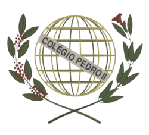

Foco acadêmico em Inteligência Artificial, Modelagem Preditiva e Inferência Estatística. Desenvolvimento de base matemática robusta para análise de dados complexos.

ConcluídoFormação técnica com base sólida em Engenharia de Software, Algoritmos e Banco de Dados. Experiência prática em desenvolvimento full-stack.
Atuação no mapeamento de afinidades e pretensões pós-ensino médio dos alunos. Responsável pela coleta de dados e construção de um grafo de relacionamentos para análise.
Participação em projetos musicais atuando na coordenação de grupos e auxílio técnico aos alunos para aprimoramento de performance vocal.